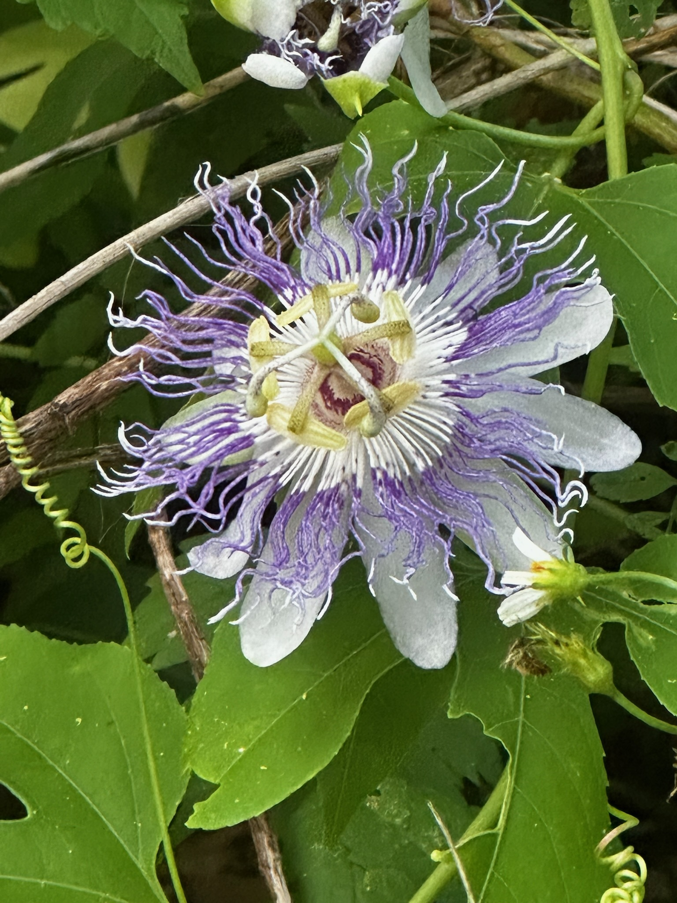
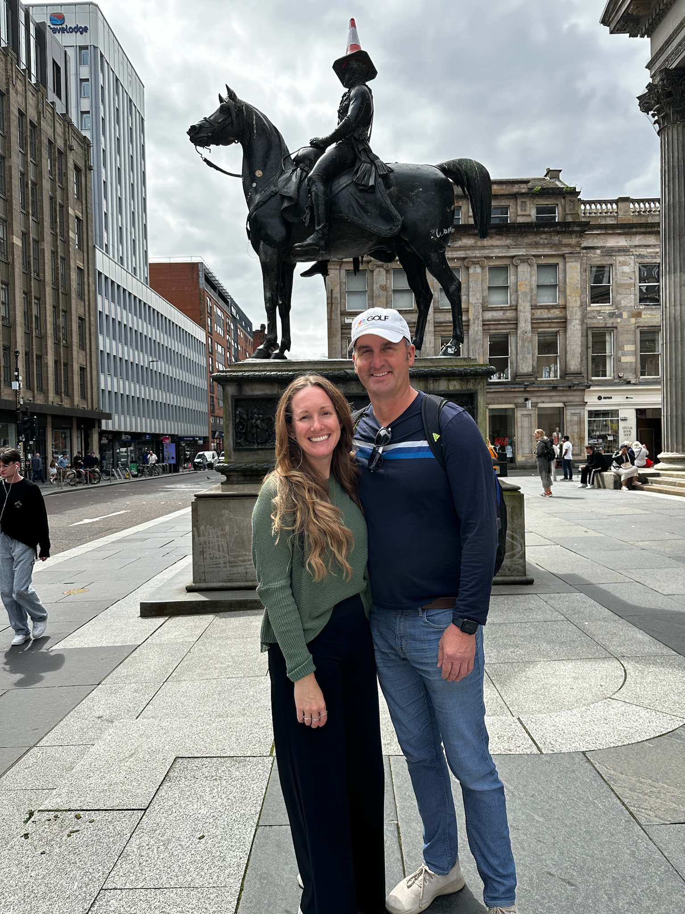

Gardening is a favorite zen time activity of mine. Watching the bees buzz around my garden makes me feel like I'm doing my part for mother nature.
Traveling is the ultimate "spice of life". This statue in Glasgow main square is my favorite thing about Glasgow. The Glaswegian people have my kind of spirit!
